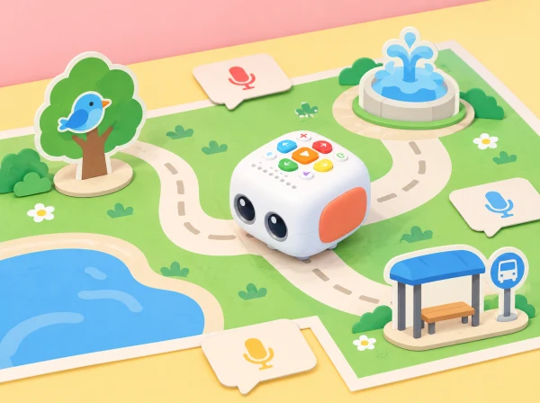

El mapa sonor del barri
🏷️ Convivència i ciutadania
🌱 Situació, repte i intenció
La proposta es calibra per a l'edat de 3–5 anys indicada pel fabricant, amb trobades breus i un objectiu principal per sessió. El robot ajuda a fer visible l'ordre de les instruccions: si la ruta no arriba al lloc previst, el grup observa, revisa i torna a provar sense valorar l'error com a fracàs.
🎯 Aprenentatges i vocabulari
- Relacionar un símbol amb un lloc i explicar que la representació no és el lloc real.
- Escoltar, imitar o descriure sons i crear una frase breu que situe qui parla i què ocorre.
- Planificar un trajecte de dues o tres parades i ordenar les instruccions abans de prémer el botó de reproducció.
- Observar el recorregut i localitzar una instrucció que cal afegir, llevar o canviar.
- Respectar el torn de veu i triar lliurement entre parlar, assenyalar, usar un pictograma o no enregistrar.
🧰 Materials i preparació
Prepareu un mapa gran i estable amb caselles prou àmplies per al moviment del Tale-Bot, tres pictogrames (aigua, ocell, transport), fitxes de direcció, targetes de frase i instruments suaus com ara un triangle, una campaneta o un tub de pluja. Afegiu una quarta casella d'inici ben visible. Carregueu i comproveu el robot abans de la sessió, reviseu que el mapa quede pla i assageu una ruta curta per estimar quantes pulsacions calen en el vostre suport.
Si el centre vol provar la funció de gravació de Tale-Bot Pro, feu-ho només amb un missatge inventat i amb el procediment de consentiment i eliminació que use el centre. L'activitat és completa sense enregistrar: l'adult pot llegir el missatge quan el robot arriba a la parada, o el grup pot alçar la targeta corresponent. No graveu veus ambientals ni converses espontànies.
📅 Seqüència didàctica
Escoltem i imaginem (20–25 min)
Fase 1 · Activem i prediem
Mostreu les tres targetes sense anomenar-les. Cada infant prediu quin lloc fictici podria representar.
Fase 2 · Explorem i construïm
Feu sonar un instrument o proposeu una onomatopeia. Els infants trien quin lloc podria produir aquell so i poden proposar interpretacions diferents.
Fase 3 · Expliquem i registrem
En grup, dibuixeu un símbol per a cada escena i dicteu una frase curta: «A la font, l’aigua fa…».
Fase 4 · Apliquem i millorem
Col·loqueu les targetes al mapa i expliqueu què representa cada símbol. Una altra parella intenta interpretar-los abans que els autors els expliquen.
Fase 5 · Comprovem i reflexionem
El mapa té un ordre (20–25 min)
Fase 1 · Activem i prediem
Recordeu el punt d’inici i trieu dues parades. Predigueu quina visitarà Tale-Bot primer i quina després.
Fase 2 · Explorem i construïm
Col·loqueu una fitxa de direcció per cada moviment necessari. Una persona segueix la ruta amb el dit, una altra mou una fitxa de paper i una tercera comprova si el robot cabria per aquell camí.
Fase 3 · Expliquem i registrem
Descriviu l’ordre amb frases com «primer anirà a…, després…». Registreu les targetes i la ruta prevista.
Fase 4 · Apliquem i millorem
Si dues targetes poden significar el mateix so, afegiu una pista visual o una frase que ajude una altra classe a distingir-les.
Fase 5 · Comprovem i reflexionem
Programem i depurem (20–25 min)
Fase 1 · Activem i prediem
Recupereu la ruta i feu una predicció de la casella final abans de programar-la.
Fase 2 · Explorem i construïm
Introduïu les instruccions a Tale-Bot amb una tira visual d’ordres. El docent acompanya la planificació i cedeix els controls en torns curts.
Fase 3 · Expliquem i registrem
Observeu el robot i marqueu la casella on ha arribat. Compareu-la amb la prevista i localitzeu l’últim moviment que coincidia.
Fase 4 · Apliquem i millorem
Si la ruta no coincideix, reviseu la tira: falta un moviment, n’hi ha un de més o la direcció és incorrecta? Canvieu una instrucció cada vegada i repetiu. En arribar a una parada, representeu el so en directe o mostreu-ne la targeta i la frase.
Fase 5 · Comprovem i reflexionem
Contem el barri a una altra classe (20–25 min)
Fase 1 · Activem i prediem
Prepareu una passejada de tres parades i prediu quines instruccions i símbols necessitarà un altre grup.
Fase 2 · Explorem i construïm
Cada equip presenta el mapa a un altre grup. Aquest intenta seguir la ruta i interpretar els símbols sense explicacions addicionals.
Fase 3 · Expliquem i registrem
Anoteu quines parades ha trobat el grup visitant i què ha entés de cada símbol o so.
Fase 4 · Apliquem i millorem
Després del primer intent, afegiu una pista visual o canvieu l’ordre de les parades. Repetiu el recorregut per comprovar si el missatge s’entén millor.
Fase 5 · Comprovem i reflexionem
🧪 Evidències i avaluació
- Mapa amb inici, llocs i pictogrames que el grup pot explicar.
- Seqüència d'ordres representada abans de la prova i corregida si cal.
- Relació oral, gestual o visual entre lloc, símbol i missatge.
- Una observació de depuració: què esperàvem, què ha fet el robot i quina instrucció hem revisat.
Useu una graella breu per anotar si cada infant participa en una elecció, anticipa una part de la ruta, interpreta almenys un símbol i comunica una idea per algun canal. L'evidència pot ser una fotografia del mapa buit, una anotació docent o una frase dictada; no cal enregistrar les veus per avaluar el procés.
♿ Participació, accessibilitat i seguretat
Feu equips xicotets amb rols rotatius: qui tria la targeta, qui ordena les instruccions, qui observa el trajecte i qui presenta el missatge. Els rols no exigeixen parlar: la persona portaveu pot assenyalar pictogrames o usar una frase model. Amb un sol robot, tot el grup pot planificar en paral·lel amb una fitxa de paper mentre un equip executa.
Inclusió i variacions
Comenceu amb dues parades, reduïu les distàncies i useu fletxes grans amb forma i color. Oferiu símbols tàctils i temps d'espera per respondre. L'alumnat pot crear un so amb un objecte, imitar-lo, seleccionar una targeta o deixar que una parella el represente. Per ampliar, afegiu una ruta alternativa i compareu quina instrucció permet arribar al mateix lloc; també es pot repetir un motiu sonor com a patró rítmic.
Privacitat
El barri i els seus habitants són imaginaris; les targetes no inclouen adreces, noms ni informació d'infants reals. L'enregistrament és opcional, mai necessari per completar la situació, i s'ha de gestionar segons les normes del centre.
🔗 Referents i adaptació
La funció de gravar històries i les targetes de micròfon formen part de les possibilitats descrites per Matatalab per a Tale-Bot Pro. Aquesta versió crea un mapa sonor original a partir d'eixes possibilitats; no reutilitza mapes ni imatges del fabricant.